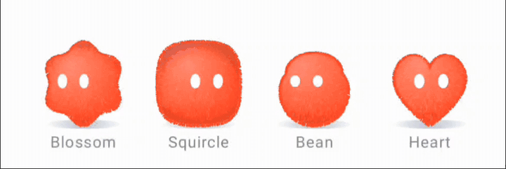

Interactive Bot UI
An animated, touch-reactive bot avatar for native Android (Jetpack Compose) and iOS (SwiftUI). 17 moods, drawn natively with no web view, no Lottie and no video files.

Why use it
- Native on both platforms, same design and API shape.
- 17 moods, including Listening, Thinking and Speaking for assistant turn-taking.
- Touch reactions built in. Fully styleable, with custom faces and SVG body shapes.
- Dependency-light, and respects reduced-motion settings.
Install
Android (JitPack):
implementation("com.github.knowamit:interactive-bot-ui:0.2.0")
iOS (Swift Package Manager):
.package(url: "https://github.com/knowamit/interactive-bot-ui", from: "0.2.0")
MIT licensed.